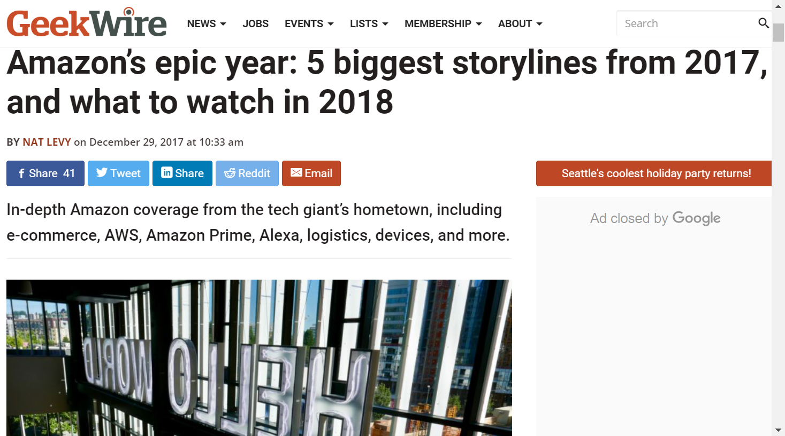

Explore Amazon's Epic Year: Data Analysis Across Social, Economic, and News Spheres
Our title embarks on a comprehensive journey to unravel the multifaceted impact of Amazon in 2017, a year branded as "Amazon's Epic Year". Amazon took many initiatives in 2017 and formulated some future plans, making it known as an Epic Year. For example, Amazon's surprise announcement of a second North American headquarters, known as HQ2, generated widespread attention. Amazon's digital assistant, Alexa, experienced significant growth. With more than 25,000 skills, Alexa was integrated into 10 new and updated devices in 2017, further solidifying its presence in the market. Amazon launched Echo devices with Alexa in 80 additional countries, expanding the global reach of its voice-activated assistant. Amazon also acquired Whole Foods Market and introduced innovative retail concepts, including the checkout-free Amazon Go store and AmazonFresh Pickup. These initiatives aimed to redefine the grocery shopping experience. Additionally, AWS continued to lead the cloud computing industry.
Amazon's reach in 2017 extended far beyond the confines of traditional business, influencing employment, sustainability, and cultural dynamics. Our research delves deep into Amazon's diverse impacts across these realms. From the societal perspective, we scrutinize Amazon's role in shaping consumer behavior and e-commerce trends. Economically, we dissect Amazon's remarkable financial growth and its ripple effects in the global market, examining stock price movements, revenue and profit growth, and its competitive stance against giants like Walmart, Target, eBay, and Netflix. Our analysis also includes a comprehensive review of Amazon's overall performance, with a particular emphasis on its portrayal in the media. By contrasting news coverage from 2016 to 2019, we aim to paint a detailed picture of Amazon's influence and evolution over time. The uniqueness of this study lies in its focused temporal lens on 2017, a pivotal year in Amazon's history, offering insights into the events and innovations that marked this transformative period.
The research is structured into three phases. The first phase analyzes Amazon's social media engagement on Facebook, exploring interactions with politicians, governmental organizations, television shows, and other companies. The second phase assesses the impact of Amazon's 2017 activities on subsequent economic development, including a detailed analysis of stock price trends and comparisons with key competitors. The third phase evaluates Amazon's comprehensive performance by analyzing news coverage from 2016 to 2019, using a dataset obtained through the Google News API.
To support this ambitious endeavor, we have collected diverse datasets, including Facebook interactions, stock price fluctuations, and news coverage, each presenting its unique challenges and opportunities for analysis. This project research holds significance for a diverse audience. Policymakers, business analysts, investors, and the general public stand to gain valuable insights into Amazon's profound impact on society, the economy, and the media landscape. Ultimately, this study aims not just to chronicle Amazon's epic year but to offer a holistic understanding of how a corporation can shape and be shaped by the social, economic, and media landscapes.